Some pictures from the Physindien 2019 experiment, along the Omani Coast, Arabian Sea
The BHO Beautemps Beaupré in Sultan Qaboos harbour (Muscat, Oman)
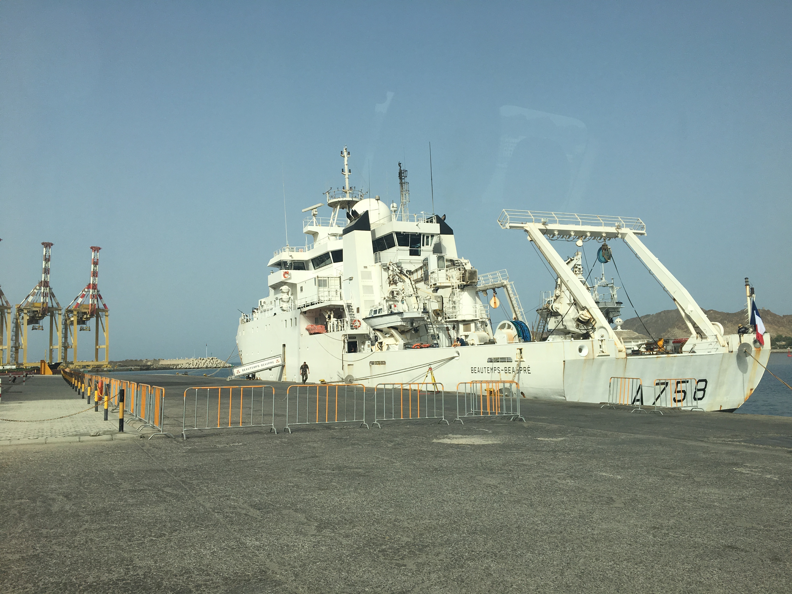
The crew of the ship standing for the official picture
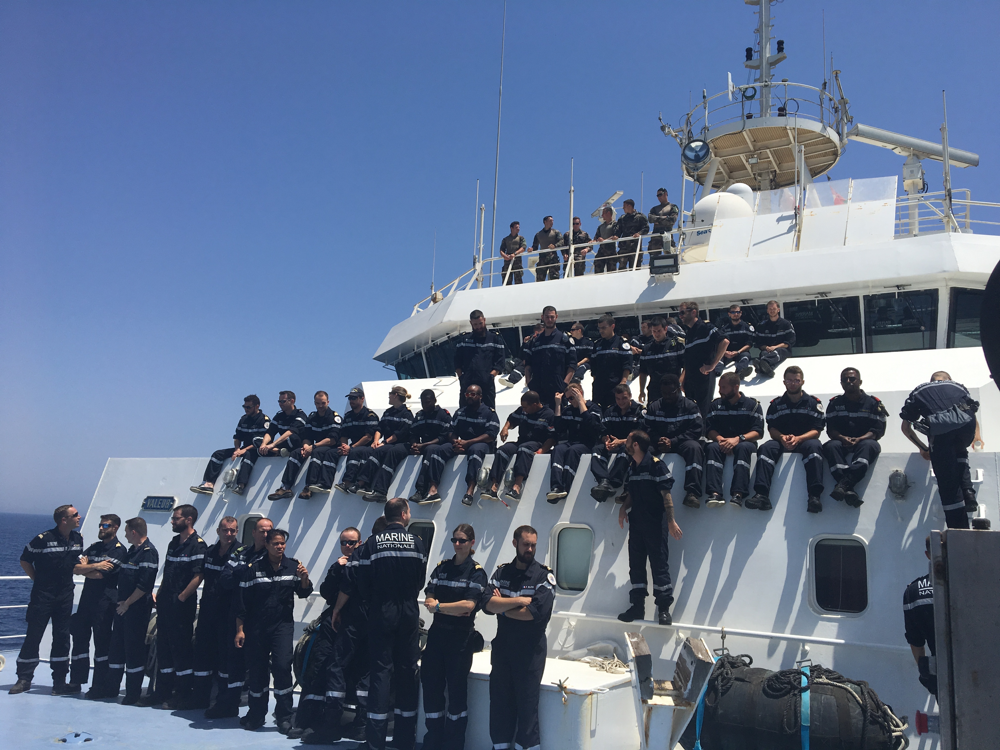
The hydrographic and scientific team, from SHOM and UBO, with the Seasoar
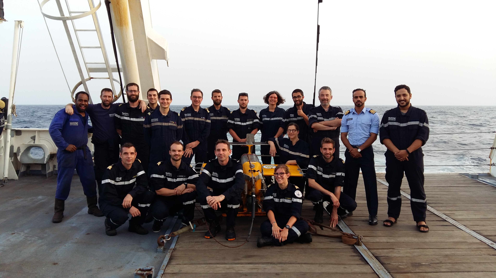
View from Salalah, Oman, starting point of the experiment
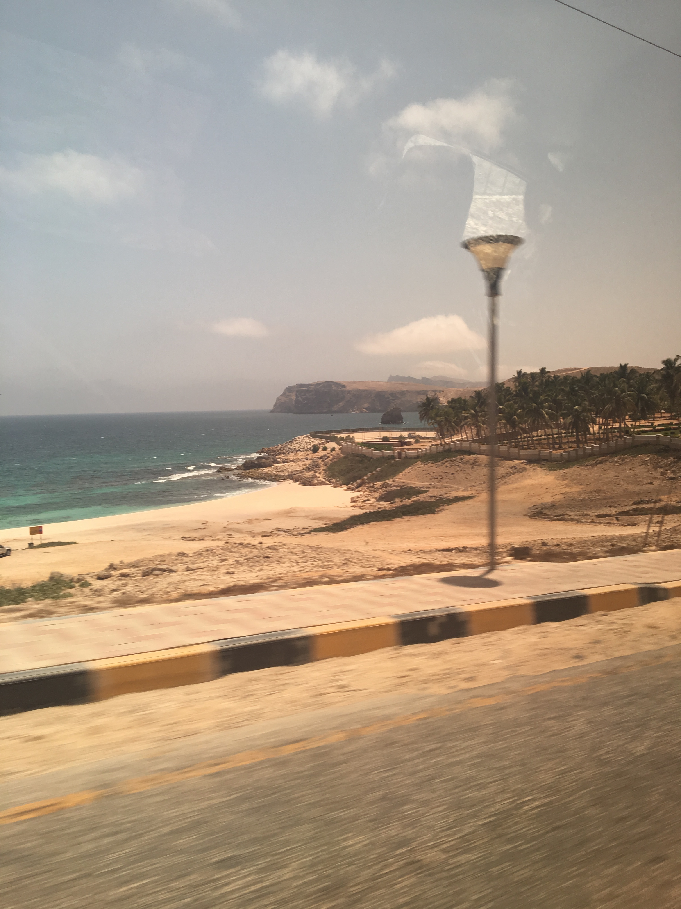
Sending the Seasoar to the sea...
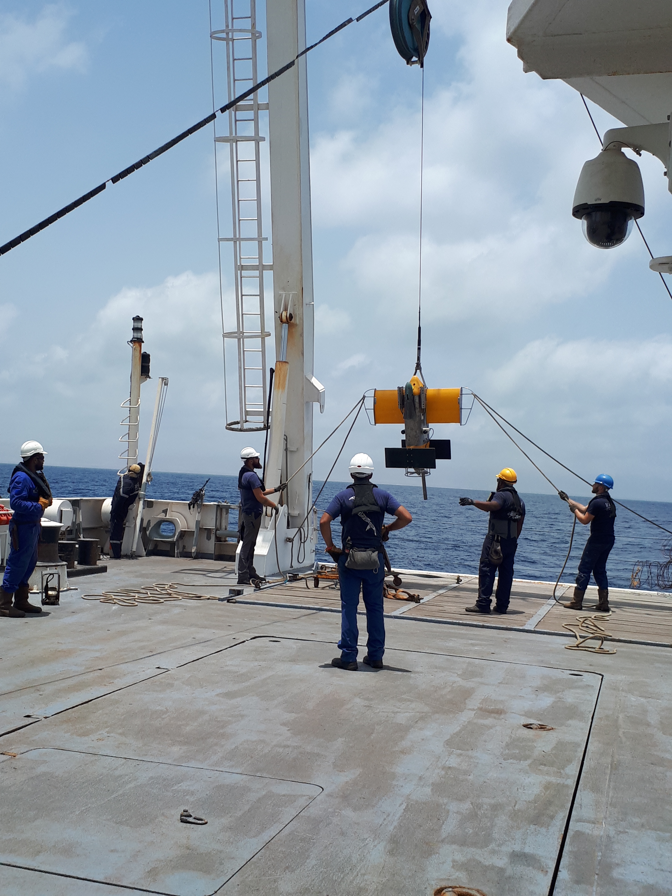
... and checking the oscillations
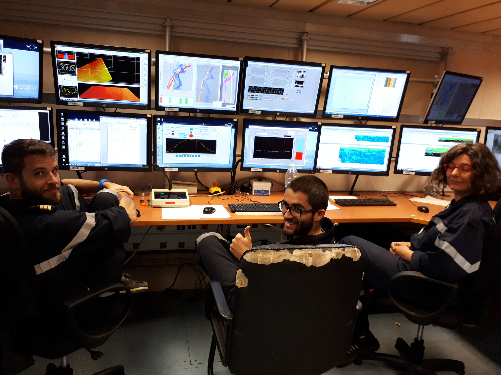
Deployment of the Rapidcast to sample deep vortices
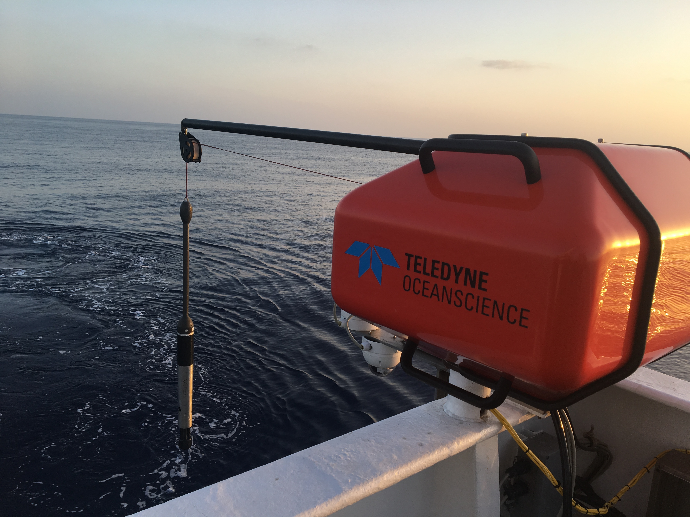
The sun rises above Arabian Sea's eddies
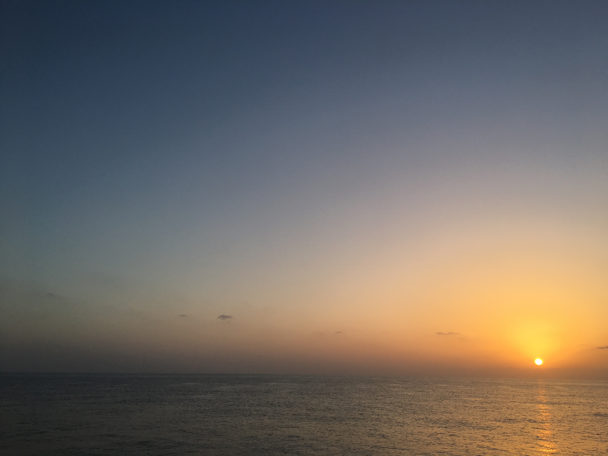
Deployment of WOCE buoys
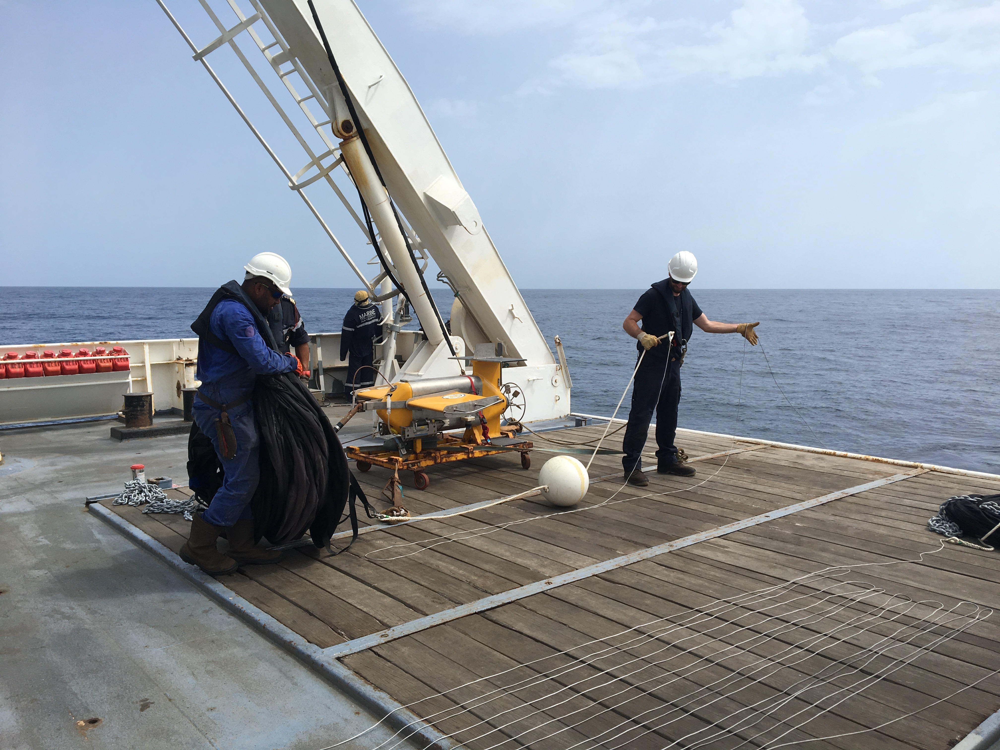
Taking care of Argo floats
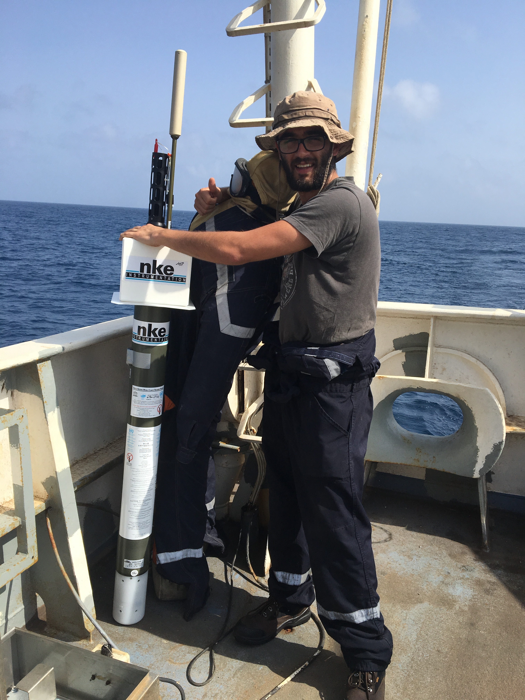
?
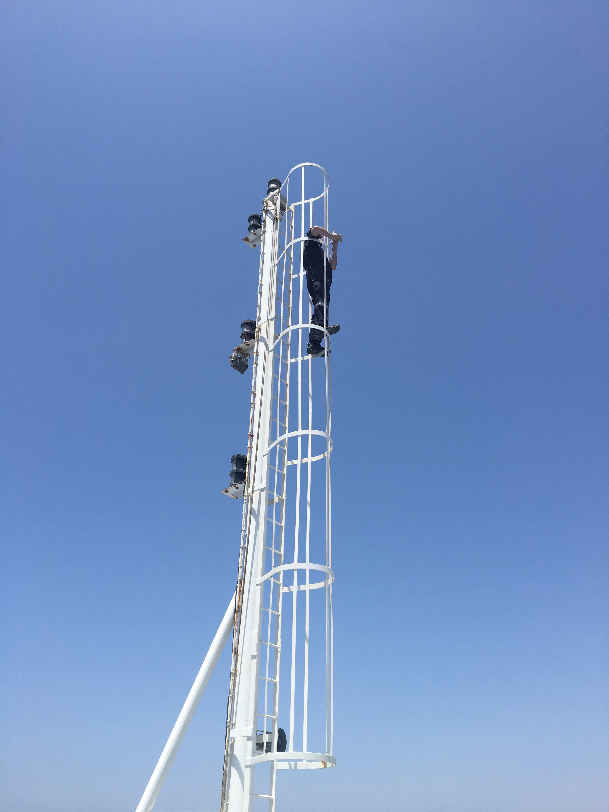
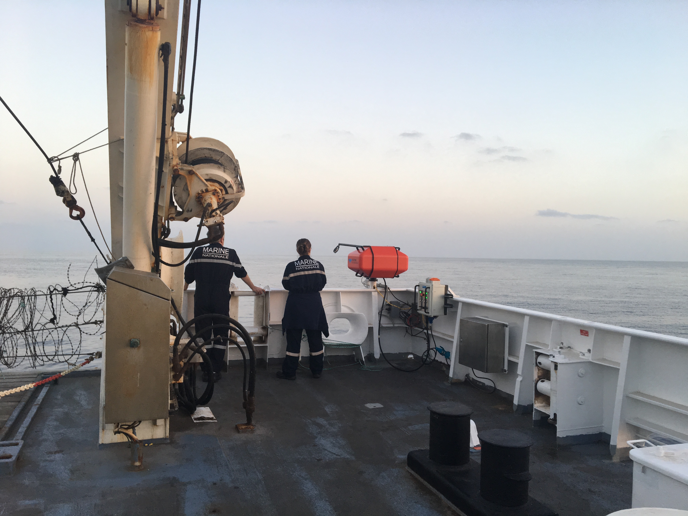